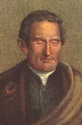
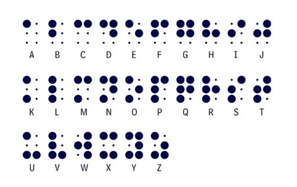

Historia del Sistema Braille
Louis Braille inventó el sistema Braille en 1824, permitiendo que personas ciegas o con baja visión pudieran leer y escribir mediante combinaciones de puntos en relieve.
Antes del Braille, existían sistemas táctiles muy complejos y poco accesibles. El método de Braille simplificó la lectura, usando patrones de 6 puntos que representan letras, números y símbolos.
Este sistema se expandió rápidamente por todo el mundo y se convirtió en la base de la educación para personas con discapacidad visual.
Hoy, además de libros impresos en Braille, existen dispositivos electrónicos que permiten leer y escribir utilizando este sistema de manera digital, facilitando aún más la inclusión educativa.
Louis Braile 1809-1952
Ahora di en tus propias palabras lo que entendiste de la lectura
El Sistema Solar
El Sistema Solar está compuesto por el Sol y todos los cuerpos celestes que orbitan a su alrededor, incluyendo planetas, asteroides, cometas y satélites naturales.
Los planetas se dividen en rocosos (Mercurio, Venus, Tierra y Marte) y gaseosos (Júpiter, Saturno, Urano y Neptuno), cada uno con características únicas.
El Sol es la estrella central, cuya gravedad mantiene a los planetas en órbita y proporciona la luz y el calor necesarios para la vida en la Tierra.
El estudio del Sistema Solar ayuda a comprender fenómenos como eclipses, estaciones y movimientos planetarios, y también inspira la exploración espacial.
Ahora di en tus propias palabras lo que entendiste de la lectura
Historia de la Matemática
La matemática surge de la necesidad de contar, medir y organizar la vida cotidiana de las primeras civilizaciones, como los egipcios y los sumerios.
Con el tiempo, se desarrollaron conceptos más abstractos, como el álgebra en Arabia, la geometría en Grecia y el cálculo en Europa durante el Renacimiento.
La matemática ha permitido avances en ingeniería, física, informática, economía y ciencias sociales, mostrando su importancia transversal en la sociedad.
Hoy en día, sigue evolucionando con nuevas ramas, aplicaciones en inteligencia artificial, estadística y modelado de fenómenos complejos, siendo esencial en la educación moderna.
Ahora di en tus propias palabras lo que entendiste de la lectura
Ciclo del Agua y Contaminación
El ciclo del agua describe cómo el agua se mueve continuamente entre océanos, ríos, atmósfera y suelo mediante procesos de evaporación, condensación y precipitación.
La contaminación del agua ocurre cuando sustancias químicas, desechos y microorganismos dañinos ingresan a ríos y lagos, afectando la vida acuática y la salud humana.
El consumo responsable y la protección de fuentes hídricas son esenciales para garantizar agua limpia para todos los seres vivos.
Educación, reciclaje y tratamiento de aguas residuales son algunas de las estrategias que ayudan a reducir la contaminación y preservar los ecosistemas acuáticos.
Ahora di en tus propias palabras lo que entendiste de la lectura
Los Ecosistemas
Un ecosistema es una comunidad de seres vivos que interactúan entre sí y con su entorno físico, como bosques, desiertos, océanos y lagos.
Cada ecosistema tiene su propia biodiversidad y equilibrio natural, donde cada especie cumple un rol importante en mantener la estabilidad del ambiente.
La acción humana, como la deforestación y la contaminación, puede alterar los ecosistemas, poniendo en riesgo la vida de plantas, animales y personas.
Conservar los ecosistemas es vital para la supervivencia del planeta, y se logra mediante educación ambiental, áreas protegidas y prácticas sostenibles en la vida diaria.
Ahora di en tus propias palabras lo que entendiste de la lectura
Abecedario y numeros en braille
Con ayuda de una persona, una hoja de papel y una aguja o un punzon estudia el sistema braille
Numeros en braille

Abecedario braille
